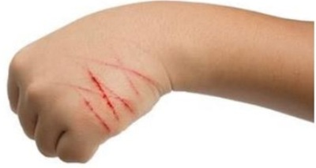

Questão 1 · Tétano · 4000141915Menino, 7 anos de idade, é levado à Unidade de Pronto Atendimento por ter pisado em um prego enferrujado quando se encontrava em um abrigo de animais. O genitor não conseguiu retirar o prego, que permaneceu encravado. Sua carteira de vacinação mostra-se desatualizada desde os 12 meses de idade. Considerando a situação descrita, Quanto à antibioticoterapia profilática é correto afirmar:
A Não há evidências científicas para a profilaxia com penicilina benzatina.
B A clindamicina e a doxiciclina estão contraindicadas no caso.
C A reação cruzada com penicilinas é maior nas cefalosporinas de 3a geração.
D Metronidazol não substitui penicilina em casos de tétano já instalado.
Questão 2 · Família DTP · dT Dupla bacteriana adulta · Pediatria · 4000141914Menino, 7 anos de idade, é levado à Unidade de Pronto Atendimento por ter pisado em um prego enferrujado quando se encontrava em um abrigo de animais. O genitor não conseguiu retirar o prego, que permaneceu encravado. Sua carteira de vacinação mostra-se desatualizada desde os 12 meses de idade. Considerando a situação descrita, Indique a estratégia de imunização correta para profilaxia de tétano, nesse caso.
A Usar vacina dupla (DT).
B Usar vacina tríplice (DPT).
C Usar vacina toxoide tetânico e imunoglobulina hiperimune antitetânica.
D Usar vacina dupla (DT) e imunoglobulina hiperimune antitetânica.
Questão 3 · Medicina Preventiva · Prevenção do tétano acidental · 4000141913Menino, 7 anos de idade, é levado à Unidade de Pronto Atendimento por ter pisado em um prego enferrujado quando se encontrava em um abrigo de animais. O genitor não conseguiu retirar o prego, que permaneceu encravado. Sua carteira de vacinação mostra-se desatualizada desde os 12 meses de idade. Considerando a situação descrita, Identifique a afirmação correta quanto aos cuidados desse paciente.
A O uso de água oxigenada não evidencia vantagens sobre a lavagem com soro fisiológico comum.
B A lavagem com clorexedina não mostrou eficácia no combate à infecção local.
C O desbridamento pode ser evitado, se a retirada do prego ocorrer antes de duas horas do ferimento ter ocorrido.
D O curativo oclusivo pós-desbridamento está contraindicado, devendo ser feito um curativo permeável .
Questão 4 · Prevenção · 4000138269A transmissão da raiva humana de animais para o ser humano depende, entre outros fatores, do tipo de lesão provocada pelo animal transmissor, podendo ser classificadas como leves ou graves, in uenciando assim, o tipo de pro laxia a ser implantada. Entre os acidentes abaixo marque com “L“para os leves e “G” para os graves e escolha a alternativa que tem a sequência correta. [ ] Ferimentos superficiais únicos, em tronco e membros (exceto mãos, polpas digitais e planta dos pés) [ ] Lambedura de pele [ ] Ferimentos profundos em qualquer região do corpo [ ] Ferimentos na planta do pé [ ] Ferimento profundo causado por unha de animal
A G, G, G, L, L
B L, G, L, G, G
C G, L, L, L, L
D L, L, G, G, G
E Nenhuma das alternativas acima está correta.
Questão 5 · Inf ectologia · Mordidas e picadas acidente com animais peçonhentos · 4000129212Assinale a assertiva correta sobre ferimentos cutâneos.
A Na cicatrização por terceira intenção, a ferida é deixada aberta até a completa resolução.
B Nos ferimentos por mordedura de cão, o antibiótico deve ser incluir cobertura para germes Gram-negativos.
C Nos ferimentos e membros inferiores, retiram-se os pontos entre 5-7 dias após a sutura.
D Prescreve-se restringir a exposição solar por até 1 mês após uma sutura, a fim de se evitar a hiperpigmentação.
Questão 6 · Prevenção · Tratamento · Diagnóstico · 4000127315Uma criança de 5 anos foi trazida à UPA vítima de mordedura de cão, na região malar, há 1 hora. Ao ser admitida foi vista ferida com cerca de 3 cm de extensão na região malar esquerda, sem áreas necróticas ou sangramento ativo e de aspecto irregular com extensão de 3 cm. A ferida foi lavada com água e sabão em casa e o cão era da família, passível de observação e não apresentava comportamento anormal ou doença evidente no momento do acidente. O cartão de vacinas da criança está completo. Acerca do manejo desse paciente, pode-se afirmar que:
A A profilaxia por vacina antirrábico não é necessária.
B Deve-se realizar a lavagem da ferida mas não a sutura.
C Deve-se realizar antibióticos e vacina antitetânica profiláticos.
D Deve-se realizar a limpeza da ferida com substância viricida (p.ex PVPI).
Questão 7 · Imunoglobulina contra raiva · Prevenção · Prevenção do tétano acidental · 4000119425Paciente de 25 anos, com diabetes melitos tipo 1, comparece ao pronto socorro com histórico de mordedura pelo seu animal (cão da raça pitbull) em mão esquerda. O cão foi sacri cado por populares que encaminharam o paciente ao pronto socorro. Ao exame, apresenta 3 lesões puntiformes em dorso de mão, uma delas com pequena laceração e coágulo. Refere histórico vacinal de tétano completo, com última dose há 6 anos. Além dos cuidados com a ferida (irrigação copiosa com salina e desbridamento), quais as demais condutas para esse caso?
A Profilaxia antibiótica com amoxicilina/clavulanato por 5 dias, toxóide tetânico 1 dose; encaminhar ao CRIE para profilaxia antirrábica com soro e vacinação nos dias 0, 7, 14 e 28.
B Profilaxia antibiótica com amoxicilina/clavulanato por 10 dias, toxóide tetânico 1 dose; encaminhar ao CRIE para profilaxia antirrábica com vacinação nos dias 0, 3, 7, 14 e 28.
C Profilaxia antibiótica com amoxicilina/clavulanato por 5 dias, toxóide tetânico 1 dose; não há indicação de profilaxia antirrábica.
D Não há indicação de profilaxia antibiótica, toxóide tetânico 1 dose; encaminhar ao CRIE para profilaxia antirrábica com soro e vacinação nos dias 0, 3, 7, 14 e 28.
Revisar: possível letra faltando em enunciado
Questão 8 · Epidemiologia · 4000110449A figura abaixo representa a situação da raiva canina e da mortalidade em humanos decorrente de raiva em uma série de 20 anos, no Brasil. A observação da figura permite concluir que em relação ao brasil:

A embora com baixos valores de mortalidade nos últimos anos, a raiva humana adquirida a partir de cães permanece como grave problema de saúde.
B o número de casos de raiva humana adquirida a partir de cães vinha caindo desde 1999, porém sofreu elevação em alguns anos recentes.
C epizootias de raiva ocorridas entre cães em anos recentes não impactaram significativamente o número de casos em humanos.
D o ano de 2018 mostrou o número mais reduzido de casos de raiva humana adquirida a partir de cães. ida oib pr ed
Questão 9 · Doença da arranhadura do gato · 4000100547Menina, 6 anos de idade, previamente hígida, apresenta quadro de tumoração em região axilar direita há 3 semanas, com aumento progressivo do volume e dor à palpação local. Nega febre, nega emagrecimento. Sem outras queixas. Ao exame, criança em bom estado geral, com múltiplas nodulações palpáveis, dolorosas, em região axilar esquerda, sem sinais ogísticos locais. Presença de múltiplas escoriações em ambas as mãos, conforme imagem abaixo. Mora em região urbana, casa de alvenaria, com saneamento básico, com pai, mãe e irmão de 4 anos. Sem outras pessoas em casa com quadro semelhante. Possuem 1 cachorro e 3 gatos domésticos. Nega contato com tossidores crônicos. Apresenta hemograma com 12.000 leucócitos por mm³, com 52% de neutró los, sem desvio, sem alterações nos níveis de hemoglobina e plaquetas, com desidrogenase láctica e ácido úrico normais. Frente a hipótese diagnóstica mais provável, qual é o tratamento indicado?

A Isoniazida, rifampicina e pirazinamida.
B Azitromicina ou claritromicina.
C Ivermectina e prednisolona.
D Oxacilina e ceftriaxone.
E Sulfadiazina, pirimetamina e ácido folínico.
Questão 10 · Prevenção · Prevenção do tétano acidental · Vacina contra raiva · 4000095129Paciente de 25 anos, com diabetes melitos tipo 1, comparece ao pronto socorro com histórico de mordedura pelo seu animal (cão da raça pitbull) em mão esquerda. O cão foi sacri cado por populares que encaminharam o paciente ao pronto socorro. Ao exame, apresenta 3 lesões puntiformes em dorso de mão, uma delas com pequena laceração e coágulo. Refere histórico vacinal de tétano completo, com última dose há 6 anos. Além dos cuidados com a ferida (irrigação copiosa com salina e desbridamento), quais as demais condutas para esse caso?
A Profilaxia antibiótica com amoxicilina/clavulanato por 5 dias, toxóide tetânico 1 dose; encaminhar ao CRIE para profilaxia antirrábica com soro e vacinação nos dias 0, 7, 14 e 28.
B Profilaxia antibiótica com amoxicilina/clavulanato por 10 dias, toxóide tetânico 1 dose; encaminhar ao CRIE para profilaxia antirrábica com vacinação nos dias 0,3,7,14 e 28.
C Profilaxia antibiótica com amoxicilina/clavulanato por 5 dias, toxóide tetânico 1 dose; não há indicação de profilaxia antirrábica.
D Não há indicação de profilaxia antibiótica, toxóide tetânico 1 dose; encaminhar ao CRIE para profilaxia antirrábica com soro e vacinação nos dias 0,3,7,14 e 28.
Revisar: possível letra faltando em enunciado
Questão 12 · Tétano · Prevenção do tétano acidental · 4000030241Paciente de 70 anos, do sexo feminino, ao fazer a poda no jardim de casa, perfurou o dedo com espinho de roseira. A vizinha aconselhou-a a ir à unidade básica de saúde (UBS) para avaliar a pro laxia de tétano, Ao chegar à UBS, disse ter certeza de duas doses de vacina dT ao longo da vida, sendo a última há mais ou menos sete anos, quando teve uma fratura. Nesse caso, qual profilaxia antitetânica deve ser preconizada para essa paciente?
A Soro antitetânico e completar a 3ª dose da vacina dT.
B Uma dose da vacina dT de reforço.
C Três doses da vacina dT.
D Uma dose da vacina dT quando completar dez anos da última dose.
Questão 13 · Pediatria · Prevenção do tétano acidental · 4000101920Diante de um escolar de 8 anos, com ferimento pérfuro-contuso contaminado e que tomou três doses da vacina contra tétano, sendo a última dose há mais de cinco anos, deve-se, para pro laxia contra o tétano, após realizar limpeza e debridamento do ferimento:
A Aplicar uma dose de dupla tipo adulto.
B Aplicar uma dose de toxoide tetânica e gamaglobulina hiperimune contra tétano.
C Aplicar uma dose de penicilina benzatina, uma dose de toxoide tetânica e soro antitetânico.
D Considerar imunizado e acompanhar ambulatorialmente.
Questão 14 · Prevenção do tétano acidental · 4000100157Mãe de criança com 6 anos de idade, masculino, procura atendimento na UPA devido ferimento corto-contuso em perna por prego enferrujado da cerca do quintal de terra. O ferimento é profundo e houve sangramento com necessidade de sutura. DJF faz acompanhamento regular na Unidade Básica de Saúde da Família (UBSF) e não há vacinas em atraso, conforme comprovado pelos registros na Carteira de Vacinação apresentada no atendimento na UPA. Observou-se que a última dose aplicada foi há 1 ano quando o menino completou aos 5 anos. Qual conduta é adequada para este paciente, em relação a profilaxia do tétano?
A Não será realizada nenhuma medida de soro ou vacina, pois paciente tem esquema de vacinação para tétano completa com 3 doses e 2 reforços, sendo o último há 1 ano
B Realizar soro antitetânico visto que ferimento pode ser contaminado pelo prego enferrujado e terra;
C Realizar imunoglobulina antitetânica pois paciente já tem 6 anos e o ferimento é altamente contaminado;
D Realizar reforço para tétano além do soro antitetânico, pois o ferimento é altamente contaminado
Questão 15 · Vacina contra raiva · 4000078040Criança chega à unidade de pronto atendimento com ferimento puntiforme em membro inferior esquerdo provocado por mordedura do cão da sua residência. Os pais relatam que o animal está com vacinação completa contra raiva (comprovada) e não apresenta nenhuma alteração de comportamento. O pediatra orienta a família a apenas observar o animal pelo período, em dias, de:
A 7
B 10
C 14
D 21
Questão 16 · Princípios Básicos do Tratamento de Lesões Cortocontusas · Cirurgia · 4000073318O principal objetivo do tratamento de uma área acometida por mordedura de cachorro na mão é:
A aplicar soro antitetânico local
B aplicar antibiótico local
C fazer sutura mecânica
D manter a função
Questão 17 · Hematologia · 4000071858Entre as alternativas abaixo, qual seria uma causa frequente de adenomegalia axilar epitroclear?
A Doença da arranhadura do gato.
B Toxoplasmose.
C Citomegalovírus.
D Linfoma Hodgkin.
E Linfoma não Hodgkin.
Questão 18 · Pediatria · Puericultura · Vacina contra raiva · 4000059901João, 3 anos de idade, entra em casa chamando a mãe para ver o “passarinho ” que achou no chão e com o qual estava brincando. A mãe, ao chegar no jardim, se assusta ao constatar que, na verdade, era um morcego. Sendo bióloga, consegue perceber que se trata de um morcego frugívoro. Considerando a exposição descrita, qual a conduta correta pós- exposição, visando a profilaxia da raiva nessa criança, conforme as normas do Ministério de Saúde do Brasil?
A Nada a fazer, por se tratar de um morcego frugívoro.
B Deve ser iniciado esquema de vacinação, enquanto se aguardam resultados laboratoriais referentes ao morcego (se infectado para raiva ou não).
C Está indicado o esquema profilático completo, com administração de soro e vacinação, com 4 doses de vacina.
D Deve ser prescrito o esquema completo de vacinação, com 5 doses.
E Deve ser prescrita apenas a imunoglobulina antirrábica humana.
Questão 19 · Tétano · 4000053922O tétano é uma doença do sistema nervoso caracterizado por espasmos musculares e contrações musculares tônicas. Sobre esta patologia, assinale a alternativa ERRADA:
A O Clostridium tetani tem como habitat preferencial o solo, o trato gastrointestinal dos animais e de humanos, ou quaisquer instrumentos contendo poeira ou terra.
B Como diagnóstico diferencial do riso sardônico do tétano teremos outras patologias como abscesso odontogênico, disfunção ou irritação de articulação têmporo-mandibular.
C Como diagnóstico diferencial da hipertonia generalizada do tétano, temos outra patologias como transtorno conversivo, intoxicação por stricnina, hipocalcemia, distonias medicamentosas e acidente vascular encefálico.
D O período de incubação varia de 7 a 10 dias ou até meses, e os primeiros sinais envolvem a musculatura craniana, principalmente o masseter, com o trismo e a dificuldade de abrir a mandíbula, vindo a seguir rigidez e dor na musculatura cervical.
E O acometimento do sistema nervoso central se dá com edema cerebral, obnubilação, torpor e coma, que é a principal causa de complicações que levam à morte nesta doença, se não tratados de maneira adequada.
Questão 20 · Asplenia · 4000028332Paciente asplênico cursa febril chega à emergência sonolento. Após anamnese, o médico constata que o referido cliente sofreu um ataque por mordedura. Dentre os tipos de mordida, qual representa uma emergência médica no paciente em questão?
A Mordida de gato
B Mordida de cão
C Mordida de peixe
D Mordida humana
E Mordida de mamífero
Questão 21 · Prevenção · Epidemiologia · 4000024798A raiva é uma antropozoonose transmitida ao homem pela inoculação do vírus presente na saliva e secreções do animal infectado, principalmente pela mordedura. Apresenta letalidade de aproximadamente 100%. Apenas os mamíferos transmitem e adoecem pelo vírus da raiva. Todas as alternativas abaixo são consideradas acidente grave, EXCETO:
A Ferimentos na cabeça, face, pescoço, mão, polpa digital e/ou planta do pé e lambedura de mucosas.
B Ferimentos profundos, múltiplos ou extensos, em qualquer região do corpo.
C Qualquer ferimento por morcego.
D Lambedura de pele com lesões superficiais e acidentes com agulhas durante aplicação de vacina animal.
Questão 22 · Artrite séptica · Tratamento · Artropatias inf ecciosas · 4000019720A respeito do tratamento da artrite sépica não complicada com hemocultura positiva, assinale a afirmativa correta.
A Na presença de cocos gram-positivos, a primeira escolha é vancomicina.
B O achado de diplococos gram-negativos contrapõe a suspeita de artrite gonocócica.
C Se precedida por mordedura de cão ou gato, é indicada ampicilina-sulbactam.
D A artrite pós-procedimento pode ser tratada em monoterapia com cefepime.
E No caso de bacilos gram-negativos, ceftazidime é uma opção ineficaz.
Questão 23 · Inf ectologia · Etiologia · Epidemiologia · 4000011463Uma doença cujo substrato de eliminação é a saliva é a
A raiva.
B sífilis.
C gonorreia.
D hepatite B.
E tuberculose.
Questão 24 · Raiva · Lista Nacional de Notif icação Compulsória de doenças agravos e eventos de saúde pública · 4000006069Você é médico em uma UBS num município em que a raiva é controlada e atende uma mulher de 32 anos com ferimento corto-contuso leve na perna direita por mordedura canina. Ela refere vacinação em dia, embora não tenha apresentado sua Carteira de Vacinação. A mordedura ocorreu durante tentativa de contenção de briga entre dois cachorros, um dos quais pertencia à paciente. O cachorro agressor era conhecido, sadio e com a vacinação completa (comprovada pelas carteiras de vacinação do animal). Considere as condutas abaixo: I - Observar o animal agressor por 10 dias. II - Notificar raiva humana. III - Aplicar soro antirrábico. IV - Aplicar vacina dT. V - Aplicar vacina antirrábica em 4 doses. VI - Notificar acidente por animal potencialmente transmissor da raiva (atendimento antirrábico). Qual alternativa mostra as condutas iniciais corretas referentes ao caso?
A II, III e V.
B IV, V e VI.
C III, V e VI.
D II, IV e V.
E I, IV e VI.
Questão 25 · Prevenção do tétano acidental · 4000003846Adolescente de 15 anos, procurou o serviço de emergência devido lesão perfurante em pé esquerdo, ocorrido em 48h em zona rural, sua genitora não sabe informar sobre sua situação vacinal. A conduta neste caso é:
A Penicilina Benzatina.
B Vacina dupla tipo adulto.
C Vacina dupla tipo adulto e imunoglobina antitetânica.
D Eritromicina.
Questão 26 · Critérios para o Fechamento Primário · Cirurgia · 4000103305Nas condutas locais iniciais de ferimentos de face devemos considerar:
A A sutura por planos mesmo após 6 horas da lesão.
B O uso de antisséptico alcoólico que deve ser cuidadoso e não se restringir à pele sadia.
C A não sutura de todos os ferimentos quando decorrentes de mordedura de animal.
D A ressecção ampla dos tecidos parcialmente isquêmicos.
Questão 27 · Prevenção do tétano acidental · 4000099529Você atende em serviço de emergência criança de 7 anos de idade com corte profundo em pé direito. Mãe refere que o lho estava jogando bola, descalço, em terreno perto de sua casa quando pisou em prego enferrujado. A carteira de vacinação está completa, sendo que a criança recebeu a última dose da vacina de tétano aos 4 anos de idade. A escolha mais apropriada para a profilaxia contra o tétano para esse paciente é:
A Vacina tríplice bacteriana contra difteria, tétano e coqueluche (DTP) - 01 dose.
B Vacina dupla adulto contra difteria e tétano (dt) - 01 dose.
C Dt (Difteria e tétano) + soro homologo - igt
D Não há indicação de profilaxia para o tétano (vacina e/ou imunoglobulina)
Questão 28 · Família DTP · Tétano · Pediatria · 4000078176Após acidente com material perfurocortante, jovem chega à emergência com laceração em região plantar direita. Na obtenção de seu histórico pregresso, cou claro que tinha feito reforço para tétano havia mais de dez anos. Além do tratamento da ferida, o procedimento correto seria:
A Não aplicar reforço vacinal nem soro antitetânico, pois o tipo de lesão não justificaria.
B Aplicar reforço vacinal, mas não soro antitetânico, pois a vacinação fora completa.
C Aplicar reforço vacinal e soro antitetânico, pois a vacinação fora feita havia mais de dez anos.
D Não aplicar reforço vacinal, mas aplicar soro antitetânico, pois a vacinação fora incompleta.
E Aplicar reforço vacinal e soro antitetânico, pois a vacinação fora incompleta e não efetiva.
Questão 29 · Inf ectologia · 4000064199Embora menos comum que a mordida ocasionada pelo cachorro, a mordida do gato ocasiona um quadro infeccioso em mais da metade dos casos. Um componente normal da ora bucal do gato, um cocobacilo Gram-negativo, é implicado na maioria dos casos de infecção aguda no local da mordida. Qual é o agente etiológico descrito?
A Klebsiella granulomatis.
B Pasteurella multocida.
C Bartonella henselae.
D Tropheryma whipplei.
E Bacteroides vulgatus.
Questão 30 · Prevenção · Epidemiologia · 4000053473A raiva humana e a exposição a animais com potencial de transmitir raiva são agravos de noti cação compulsória. Com relação às mais recentes orientações de profilaxia na raiva humana pós-exposição, assinale a CORRETA.
A Acidentes leves são ferimentos superficiais, pouco extensos, em tronco e membros (exceto mãos e pés), não se incluem lambeduras.
B Acidentes graves são ferimentos na cabeça, face, pescoço, mãos e pés; profundos, múltiplos ou extensos em qualquer região do corpo; lambeduras de lesões e mucosas.
C O esquema de profilaxia com vacina de raiva inativada, quando indicado, é composto de quatro doses nos dias zero, três, sete e quatorze, via intramuscular, e não se deve aplicar no glúteo.
D O soro antirrábico deve ser administrado o quanto antes, infiltrado no local da lesão, porém, se não foi possível administrar toda a dose, o restante pode ser intramuscular, excluindo-se a região glútea. O prazo máximo para aplicação é de 10 dias após a aplicação da primeira dose da vacina.
E Acidentes ocorridos com cães ou gatos conhecidos, que vivem exclusivamente dentro de domicílio, mesmo que não tenham contato com outros animais, devem seguir a profilaxia de forma rígida devido à gravidade da doença em humanos.
Questão 31 · Doença da arranhadura do gato · 4000049588Paciente de 42 anos de idade, relata aumento de volume de linfonodo axilar à esquerda, doloroso, e febre. Trabalha como cuidador de animais, com cães e gatos. Nega comorbidades. Ao exame apresenta: T = 37,9ºC, com linfadenopatia axilar à esquerda dolorosa, lesão pustulosa em antebraço esquerdo de 0,5 cm de diâmetro. Assinale a assertiva que contém o patógeno mais provável e o tratamento antimicrobiano correto para este.
A S. aureus; sulfametoxazol + trimetoprim.
B M. tuberculosis; esquema RIPE.
C B. henselae; azitromicina.
D M. avium; azitromicina.
E Y. pestis; doxiciclina.
Questão 32 · Manif estações clínicas · 4000039506São caraterísticas do tétano generalizado, EXCETO:
A Trismo com dificuldade de abrir a mandíbula.
B Redução do nível de consciência.
C Disautonomia com oscilações bruscas de pressão arterial e frequência cardíaca.
D Contratura tônica da musculatura facial produzindo o denominado risus sardonicus.
Questão 33 · Prevenção do tétano acidental · 4000021315Laura, 6 anos, sofreu esmagamento de membros inferiores na mangueira do sítio do seu avô, chega para ser tratada no pronto socorro, sua mãe, prevendo a necessidade, trouxe a carteira de vacina da criança, ela contém duas doses de vacina antitetânica. Nesse caso, deve-se:
A Aplicar vacina antitetânica no momento em que chegou ao hospital e não realizar imunoglobulina (IGT), pois já possui duas doses da vacina e necessita de apenas mais uma dose para completar o esquema vacinal.
B Aplicar imunoglobulina (IGT) e não aplicar vacina antitetânica, pois a vacina bloquearia a ação da imunoglobulina.
C Aplicar vacina antitetânica até 72h após o trauma (como profilaxia ela tem ação se aplicada nesse período) e não realizar imunoglobulina (IGT), pois já possui duas doses da vacina e necessita de apenas mais uma dose para completar o esquema vacinal.
D Aplicar imunoglobulina (IGT) e vacina antitetânica em locais diferentes.
Questão 34 · Prevenção do tétano acidental · 4000020953Criança, masculino, 6 anos de idade acidentou-se com prego enferrujado, ferindo gravemente o pé esquerdo. Foi levada ao Centro de Atenção Integrada à Saúde (CAIS) de Campinas onde foi realizada a sutura. Seu esquema vacinal estava completo para idade de acordo com o Programa Nacional de Imunizações. Em relação à prevenção do tétano, indica-se
A reforço da vacina (dupla adulto) e imunização passiva.
B reforço da vacina (dupla infantil), sem imunização passiva.
C fazer a imunização passiva.
D não realizar vacinação de reforço nem imunização passiva.
Questão 35 · Tétano · Inf ectividade · Virulência · 4000110135Das infecções abaixo, aquela que possui baixa infectividade, alta patogenicidade e alta virulência é
A Gripe H1N1.
B Sarampo.
C Dengue.
D Difteria.
E Tétano.
Questão 36 · Diagnóstico · Tratamento · 4000081330O tétano é uma doença grave e de alta letalidade, porém e cientemente controlada pela vacinação adequada. No Brasil, a melhoria da assistência ao pré-natal reduziu significativamente a ocorrência de tétano neonatal. Entretanto, casos de tétano acidental continuam ocorrendo pela imunização inadequada, principalmente dos adultos. Considerando as recomendações do Ministério da Saúde/Brasil, o melhor conjunto de medidas pro láticas para um homem de 65 anos que sofreu ferimento perfurante com prego enferrujado, na região plantar do pé direito, e que nunca recebera vacinação alguma é, além de cuidados locais, o uso de:
A Antibiótico e soro antitetânico.
B Soro antitetânico e vacina contra difteria e tétano.
C Soro antitetânico e vacina antitetânica.
D Antibiótico e vacina antitetânica.
Questão 37 · Tétano · Prevenção do tétano acidental · 4000072217Enquanto jogava futebol com os colegas, criança de 4 anos de idade machuca o pé em um pedaço de ferro jogado no terreno abandonado do bairro. A mãe procura o posto e é constatada a presença de pequena lesão corto-contusa, que não precisa suturar. Você avalia o cartão de vacina do mesmo e verifica que ele está completo de acordo com o programa nacional de imunizações. A conduta mais adequada é:
A Dar orientações de higiene e curativo diário, fazer aplicação de vacina antitetânica, deixando programadas mais duas doses.
B Dar orientações de higiene e curativo diário, fazer aplicação de duas doses de vacina antitetânica e iniciar antibioticoterapia profilática.
C Dar orientações para cuidados locais como higiene diária e sempre que necessário com água e sabão e observar sinais de possível infecção secundária.
D Fazer curativo local com soro fisiológico diário e dar antibiótico profilático.
Questão 38 · Manif estações clínicas · 4000047052O tétano é uma toxinfecção causada pela toxina do bacilo tetânico, introduzido no organismo por meio de ferimentos ou lesões de pele. A doença apresenta-se sob a forma generalizada ou localizada. Clinicamente, o tétano acidental se manifesta por:
A Febre alta desde o início, ausência de trismos, presença de sinal de KERNING e BRUDZINSKY, cefaleia e vômito.
B Lesões maculopapulares cutâneas, hipertrofia ganglionar, comprometimento renal e outras artrites; pode cursar trismo.
C Ausência de ferimentos e de espasmos intensos. Quando o paciente se distrai, desaparecem os sintomas.
D Febre baixa ou ausente, hipertonia dos músculos, o período de infecção dura em média de 2 a 5 dias, não apresenta período de remissão, ocorre sudorese pronunciada e pode haver retenção urinária por bexiga neurogênica.
E Espasmos, principalmente, nas extremidades, sinais de TROUSSEAU e CHVOSTEK presentes, hipocalcemia e relaxamento muscular entre os paroxismos.
Questão 39 · Prevenção · Vacina contra raiva · 4000046779Identi que a doença infectocontagiosa que a vacina para sua prevenção e controle não tem contraindicação (gravidez, mulheres lactentes, doença intercorrente ou outros tratamentos), devido à gravidade da doença que apresenta letalidade de aproximadamente 100%. Sempre que possível, recomenda-se a interrupção do tratamento de corticoides e/ou imunossupressores, ao iniciar o esquema de vacinação. A vacina que não deve ser aplicada na região glútea é a vacina:
A De calazar.
B Da lepstopirose.
C Da febre amarela.
D De febre do Nilo ocidental.
E Da raiva humana.
Questão 40 · Prevenção do tétano acidental · 4000035900Você atende em uma unidade de emergência um adolescente de 16 anos de idade que fez corte na mão enquanto partia tomates num restaurante fast-food. Sua mãe, contatada por telefone, a rma que ele não é imunizado desde os 05 anos de idade, garantindo que as imunizações estavam completas até aquela idade. A escolha mais apropriada para a pro laxia contra o tétano para esse paciente é:
A Vacina tríplice bacteriana contra difteria, tétano e coqueluche (dtp).
B Vacina dupla adulto (dt).
C Imunoglobulina contra o tétano (igt).
D dt + igt.
Questão 41 · Inf ectologia · Prevenção · 4000018493Criança de oito anos de idade, proveniente de região rural, deu entrada no pronto- socorro após ter sido mordida por animal silvestre (porco-do-mato), que desapareceu após o ocorrido. O ferimento na criança era profundo e múltiplo, localizado no antebraço esquerdo, sem perda de substância. Foi realizada lavagem exaustiva do ferimento após anestesia local, com debridamento de tecido desvitalizado, hemostasia e realização de pontos distantes para aproximação. A respeito do esquema para pro laxia antirrábica humana pós-exposição no caso clínico apresentado, julgue o item a seguir. Nesse caso, indica-se a administração da vacina antirrábica humana de cultivo celular, em quatro doses, bem como a administração de soro antirrábico, do qual deve ser administrada pelo menos metade da dose local do ferimento no atendimento inicial.
A Certo.
B Errado.
Questão 42 · Prevenção do tétano acidental · 4000103596Em uma quarta-feira à noite, após o jogo de futebol entre Corinthians e Guarani do Paraguai, CLB um jovem de 23 anos de idade foi atendido em um Pronto-Socorro da Capital com um ferimento profundo na face. Ele trazia consigo a carteira de vacinação, completa até os quinze anos de idade. A conduta mais adequada neste caso é:
A Lavagem cuidadosa do local, soro antitetânico e uma dose da vacina contra o tétano.
B Lavagem cuidadosa do local, penicilina benzatina e uma dose da vacina contra o tétano.
C Lavagem cuidadosa do local, sutura se necessário e soro antitetânico.
D Lavagem cuidadosa do local e uma dose da vacina contra o tétano.
Questão 43 · Prevenção do tétano acidental · 4000102971Paciente 15 anos de idade, masculino, foi trazido para atendimento com clínica de que há 3 dias pisou em um prego enferrujado. A mãe refere que ele recebeu todas as vacinas, mas não encontrou a carteirinha de vacinação. Qual a conduta correta nessa situação?
A Limpeza do ferimento com desbridamento do tecido lesado, imunoglobulina específica e vacina antitetânica.
B Desbridamento do tecido lesado, associado com limpeza do ferimento e Penicilina Benzatina para prevenção da infecção.
C Limpeza do ferimento com desbridamento do tecido lesado, vacina antitetânica e Penicilina Benzatina para prevenir infecção.
D Limpeza do ferimento com desbridamento do tecido lesado e vacina antitetânica.
Questão 44 · Pediatria · Prevenção do tétano acidental · 4000097691Menino de 8 anos com ferimento perfuro contuso em lata encontrada em terreno baldio. Mãe refere que tomou 3 doses da vacina contra tétano, sendo a última dose há mais de 5 anos. Qual a conduta para pro laxia contra o tétano após limpeza e debridamento do ferimento?
A Dar 1 dose de toxoide tetânico e gamaglobulina hiperimune contra tétano.
B Aplicar uma dose de penicilina benzatina.
C Aplicar uma dose de penicilina benzatina, 1 dose de toxoide tetânico e soro antitetânico.
D Dar 1 dose de dupla tipo adulto.
Questão 45 · Vacina contra raiva · 4000057096Menor de três anos é atendido com queixa de mordedura de cão há 24 horas. Exame físico: ferida super cial em panturrilha direita com três centímetros de comprimento, hiperemia, calor e dor no local. Sem outras alterações ao exame físico. HPP: quatro infecções de vias aéreas no último ano. História vacinal: esquema em dia para a idade. O cão pertence a família, encontra-se saudável e está em dia com a vacina antirrábica. Além da limpeza da ferida/curativo, a conduta a ser adotada nesse caso é:
A Vacina antirrábica, reforço da vacina antitetânica e penicilina benzatina IM.
B Reforço da vacina antitetância e penicilina benzatina IM.
C Imunoglobulina antitetânica e clindamicina VO.
D Imunoglobulina antitetânica e cefalexina VO.
E Amoxicilina/ácido clavulânico VO.
Questão 46 · Prevenção · 4000053091Uma jovem de 24 anos estava passeando na rua de casa quando foi mordida na mão direita pelo cão do seu vizinho. A mordedura foi profunda e teve saída de muito sangue. O dono do cão disse que ele é vacinado e que a moça não precisava se preocupar. A jovem não procurou nenhum atendimento médico naquele momento. No entanto, após cinco dias, o ferimento apresentou hiperemia importante e saída de secreção purulenta e fétida, sem outros sintomas. A jovem não possuía mais sua carteira vacinal e não se recordava de ter feito seus reforços vacinais. A conduta mais apropriada para esse caso é:
A Iniciar cefalexina, soro antitetânico e vacina tetânica.
B Iniciar ciprofloxacino e vacina tetânica.
C Iniciar doxiciclina e vacina tetânica.
D Iniciar amoxicilina + clavulanato, soro antitetânico e vacina tetânica.
E Iniciar metronidazol soro antitetânico e vacina tetânica.
Questão 47 · Imunoglobulina contra raiva · Prevenção · Vacina contra raiva · 4000046464A respeito de prevenção e tratamento das doenças infecciosas, julgue o item a seguir. Situação hipotética: Um paciente foi atendido no pronto-socorro após ter sido mordido por um cachorro no antebraço direito. Os ferimentos eram múltiplos e profundos. O cachorro era sadio e com vacinação antirrábica adequada. O paciente recebeu vacina antitetânica e teve os ferimentos lavados com água e sabão. Foram indicadas administração da vacina antirrábica, em duas doses inicialmente, uma no dia 0 e outra no dia 3, e a observação do animal por dez dias. Entretanto, no quinto dia de observação, esse processo foi interrompido devido à fuga do animal. Assertiva: Nesse caso, a orientação adequada seria a administração do soro antirrábico mais três doses da vacina antirrábica, sendo a primeira dose entre o sétimo e o décimo dia após exposição, outra no décimo quarto dia e a última dose no vigésimo oitavo dia após exposição.
A Certo.
B Errado.
Questão 48 · Tétano · Prevenção do tétano acidental · 4000029935Jovem de 16 anos de idade deu entrada no pronto socorro trazido pelo SAMU com ferimento laceroperfurante em coxa esquerda. Segundo o APH, a lesão foi determinada por arame farpado durante tentativa de fuga da polícia. Das três doses da vacina antitetânica, a última foi realizada há mais de 6 anos, segundo informação fornecida pela mãe. Assinale a alternativa CORRETA em relação à profilaxia antitetânica adequada nesse caso.
A Não realizar o reforço da vacina antitetânica, pois a antibioticoterapia sistêmica será iniciada nesse tipo de ferimento.
B Não realizar o reforço da vacina antitetânica, pois o paciente já havia completado as três doses obrigatórias do esquema básico de vacinação.
C Realizar o reforço da vacina antitetânica, pois o paciente é jovem.
D Não realizar o reforço da vacina antitetânica, pois esse tipo de ferida é considerado limpa.
E Realizar o reforço da vacina antitetânica, pois a última dose foi administrada há mais de 6 anos.
Questão 49 · Prevenção do tétano acidental · 4000126650Dois irmãos de, respectivamente, 10 anos e 17 anos de idade deram entrada na Unidade de Pronto Atendimento (UPA), trazidos por seus pais, com história de estarem praticando ciclismo radical em um parque da cidade, quando se acidentaram e caíram ao chão. O irmão mais novo apresentava ferimentos corto-contusos profundos em membros superior e inferior direitos, contaminados por terra e, que necessitaram de limpeza exaustiva e suturas. O irmão mais velho apresentava escoriações em ambos os membros superiores, que necessitaram apenas de limpeza e curativo para proteção. Os pais foram questionados sobre a situação vacinal contra o tétano e informaram que seus lhos haviam recebido a última dose da vacina antitetânica aos seis anos de idade. Em relação à imunização contra o tétano, qual a orientação correta nesse caso?
A A vacinação não é necessária para nenhum dos filhos.
B A vacinação deve ser feita apenas para o filho mais novo.
C A vacinação deve ser feita apenas para o filho mais velho.
D A vacinação deve ser feita igualmente para os dois filhos.
Questão 50 · Tétano · Prevenção do tétano acidental · 4000100061Uma adolescente de 12 anos de idade sofreu lesão cortante profunda na perna esquerda quando caminhava por uma trilha. Seu esquema vacinal encontra-se completo. Qual a conduta em relação à profilaxia do tétano?
A Imunização passiva.
B Vacina dupla adulto e imunização passiva.
C Vacina dupla adulto.
D Não há necessidade de profilaxia fácil.
Questão 51 · Prevenção · 4000050411Sobre a profilaxia da raiva, assinale a alternativa INCORRETA:
A A imunoglobulina humana antirrábica é um produto mais seguro que o soro antirrábico e também indicado para contactantes frequentes de equídeos.
B A profilaxia pré-exposição é indicada para médicos que trabalham em prontos- socorros no atendimento de pacientes expostos à mordedura de cães.
C Os soros antirrábicos são seguros, mas podem causar eventos adversos como qualquer imunobiológico.
D Não é indicado tratamento antirrábico nas agressões causadas por ratazanas de esgotos.
E Em casos de lambedura na pele íntegra, por animal suspeito, recomenda-se lavar o local com água e sabão.
Questão 52 · Microbiologia e Antimicrobianos · 4000049070No caso de mordeduras humanas e de animais, além das pro laxias vacinais pertinentes, deve ser considerada a cobertura de Pasteurella multocida (Red Book, 2012). O antimicrobiano indicado para tal cobertura é:
A Cefalexina.
B Azitromicina.
C Amoxicilina-clavulanato.
D Ceftriaxona.
Questão 53 · Indicações · 4000021197Criança, 6 anos de idade, chega ao pronto-socorro, com história de ter sido mordida por um cão de propriedade dos vizinhos. Apresentava lesão profunda no pescoço. A criança nuca havia recebido pro laxia anti-rábica e as informações dão conta que o cão encontra-se em boas condições de saúde. Frente a esta situação, a conduta médica inicial deve ser observação do animal e:
A 3 doses de vacina antirrábica.
B Uma dose de soro antirrábico, mais 5 doses de vacina antirrábica.
C 7 doses de vacina antirrábica.
D 5 doses de vacina antirrábica.
Questão 54 · Tétano · Inf ectologia · Manif estações clínicas · 4000013173Com relação ao Tétano generalizado, assinale a alternativa INCORRETA.
A Os Benzodiazepínicos são as drogas de escolha para controle dos espasmos musculares.
B Imunização passiva com imunoglobulina deve ser realizada nos casos confirmados.
C Não há acometimento do Sistema Nervoso Autônomo nos casos de Tétano generalizado.
D O antibiótico de escolha para o tratamento do Tétano é o Metronidazol.
Questão 55 · Tétano · Princípios Básicos do Tratamento de Lesões Cortocontusas · 4000126999Tipos de Sutura e Suas Principais Características Um adolescente com 17 anos de idade estava praticando moutain bike quando sofreu uma queda em um trecho cheio de lama e feriu o dorso, há cerca de quatro horas. Ao exame físico, na Unidade de Pronto-Socorro, observou-se ferimento com cerca de seis centímetros de extensão em região escapular, acometendo a pele e o tecido subcutâneo, sem sangramento ativo, bordos regulares, sujo de terra. A mãe dele informou que todas as vacinas regulares foram feitas nas datas previstas e que a vacina antitetânica foi feita há cinco anos. Depois da limpeza da ferida, qual é a conduta indicada
A Desbridamento das bordas, curativo e cicatrização por segunda intenção, imunoglobulina antitetânica.
B Sutura primária, sem necessidade de imunuglobulina ou toxoide tetânico.
C Sutura primária, toxoide tetânico e imunoglobulina antitetânica.
D Desbridamento das bordas, sutura primária e toxoide tetânico.
Questão 56 · Inf ecção de pele e partes moles Piodermites · 4000074737A associação antimicrobiana de escolha para tratamento das infecções por mordedura de cão é:
A Clindamicina + Doxiciclina.
B Cefoxitina + Doxiciclina.
C Penicilina + Doxiciclina.
D Amoxiciclina + Ácido Clavulânico.
Questão 57 · Raiva · Prevenção · Vacina contra raiva · 4000049607Criança de 8 anos encontra morcego caído no chão perto de casa. Ele pega o morcego para mostrar para sua mãe, quando é mordido na mão e o morcego escapa voando pela janela. Como deve ser feita a profilaxia para raiva neste caso?
A Iniciar imediatamente o esquema com cinco doses de vacina administradas nos dias 0, 3, 7, 14 e 28.
B Iniciar imediatamente esquema com soro antirrábico e vacina com duas doses, uma no dia 0 e outra no dia 3.
C Iniciar imediatamente soro antirrábico.
D Iniciar imediatamente o esquema com soro e cinco doses de vacina administradas nos dias 0, 3, 7, 14 e 28.
E Iniciar imediatamente esquema com duas doses de vacina, uma no dia 0 e outra no dia 3 e observar por 10 dias. Se houver sinais de doença nesse período, complementar o esquema vacinal.
Questão 58 · Inf ecção de pele e partes moles Piodermites · 4000080091Celultites resultantes de infecção complicando mordeduras de cães e gatos devem ser preferencialmente tratadas com:
A cefalexina.
B amoxicilina + clavulanato.
C trimetoprim + sulfametoxazol.
D azitromicina.
Questão 59 · Vacina contra raiva · 4000072145Na abordagem de doenças infectocontagiosas, pode-se afirmar que:
A A vacinação contra meningococo B deve ser realizada rotineiramente a partir de 2 meses de vida.
B O ferimento, em caso de acidentes por mordedura ou arranhadura de cães e gatos, deve ser lavado com água e sabão e consultado um médico.
C O tratamento do parceiro sexual, no caso do diagnóstico de sífilis, não é necessário.
D A hanseníase se transmite de pessoa para pessoa apenas com o contato íntimo das lesões de pele infectadas.
E A leptospirose é transmitida pela eliminação das bactérias na urina de roedores, sendo que a doença ocorre apenas na espécie humana.
Questão 60 · Manif estações clínicas · Prevenção · Epidemiologia · 4000070604Quando da agressão de um ser humano por um cão ou gato, considerando que as características da Raiva nestes animais são bem conhecidas e semelhantes, tais como o período de incubação, a transmissão e o quadro clínico, qual das seguintes situações abaixo descritas é de menor relevância?
A Procedência do animal (se é de uma área controlada ou não de Raiva).
B Hábitos de vida do animal (domiciliado ou não domiciliado).
C Estado de saúde do animal no momento da agressão (se estava sadio ou se tinha sinais sugestivos de Raiva).
D Estado vacinal do animal agressor (se estava ou não em dia com a vacinação antirrábica).
E Possibilidade de observação do animal agressor por um período de 10 dias.
Questão 61 · Sídrome Oculogladular de Parinaud · 4000065278Menino, cinco anos, é levado ao pronto-socorro devido a eritema e edema do olho direito. O exame físico revela conjuntivite granulomatosa no olho direito e um linfonodo pré-auricular doloroso à palpação. Ademais, há outros linfonodos palpáveis na região submandibular ipsilateral. Mãe nega febre, sintomas respiratórios, náusea e vômitos ou diarreia, e revela que a família ganhou um gato novinho há quatro meses. O provável agente etiológico do quadro clínico é:
A Staphylococcus aureus.
B Adenovírus tipo 7.
C Bartonella henselae.
D Toxoplasma gondii.
E Citomegalovírus.
Questão 62 · Manif estações clínicas · Tratamento · 4000018857Sobre ferimentos causados por mordeduras, marque o item CORRETO:
A Os ferimentos por mordeduras de animais devem ser extensamente irrigados, desbridados e não podem ser suturados.
B Os ferimentos por mordeduras humanas devem ser extensamente irrigados, desbridados e podem ser suturados, dependendo das outras condições locais.
C As mordidas por cães são mais comuns, contando com 80 a 90 % dos casos. O antibiótico sistêmico de primeira escolha é amoxilina/clavulanato.
D As mordidas por felinos são o segundo tipo mais comum, contando com 5 a 15% dos casos. O antibiótico sistêmico de primeira escolha é a cefalexina.
Questão 63 · Prevenção · 4000095242Uma criança, no passeio ao Jardim Zoológico, é mordida por um coati na polpa digital do 5° dedo da mão direita. Assinale a alternativa que corresponde à profilaxia antirrábica correta.
A Soro antirrábico e penicilina cristalina.
B Soro antirrábico e vacina antirrábica.
C Vacinação antirrábica.
D Vacina antirrábica e penicilina cristalina.
E Observação do animal durante dez dias.
Questão 64 · Outras doenças inf ecciosas · 4000067168Um paciente de 6 anos de idade foi internado na enfermaria pediátrica com linfadenomegalia cervical e axilar do lado direito. Alguns gânglios estavam ulcerados e stulizados, drenando secreção ganglionar. Das doenças citadas abaixo, assinale aquela que menos provavelmente apresenta esta evolução: Respostas: 1 12 23 34 45 56
A Tuberculose.
B Doença da arranhadura do gato.
C Febre da moderdura do rato.
D Esporotricose.
E Paracoccidioidomicose.